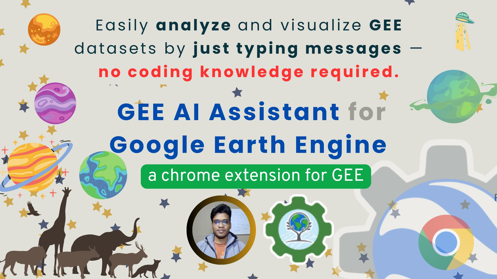

Fooding | Coding | Writing | Travelling
LinkedIn ResearchGate Scholar YouTube Email
A 5-day virtual workshop for PG students at Centurion University, Bhubaneswar.
View all events
A critical look at the risks of relying solely on proprietary tools like Google Earth Engine, and why a hybrid workflow integrating open-source powerhouses like Python and R…

While cloud GIS is popular but the processing environment and ease of use is the main bottleneck.
View all posts
Guide to spatial analysis using R.
Cloud-based remote sensing with Earth Engine.
Spatial data science with Python.
View all courses
Gemini-powered coding assistant for Earth Engine.
Crop classification based on phenological patterns.
Analyze spectral signatures across multiple bands.
View all innovations
Application of AHP for mapping flood vulnerability using Google Earth Engine (2025).
A study of Paschim Medinipur district, West Bengal in Modern Cartography Series (2024).
Presentation on Gemini-powered coding assistant for Earth Engine at GDG Nairobi.
View all publications